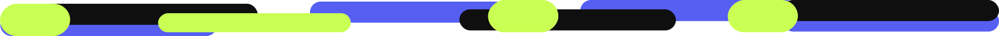

Sobre o Evento
A Python Sudeste é uma das maiores conferências regionais de Python do Brasil
A Python Sudeste (PySE) é um dos grandes eventos regionais da linguagem Python no Brasil. Tem por objetivo fomentar e compartilhar o conhecimento da tecnologia nos estados da região sudeste. Profissionais, estudantes, professores e entusiastas têm a chance de conhecer mais sobre as tendências de toda a área de tecnologia.
São abordados temas como Inteligência Artificial, Desenvolvimento Web, Otimização, Automação e DevOps, apresentando tanto a teoria (técnicas, frameworks, processos etc.) quanto a prática (casos de uso, demonstrações e outros) nas mais diversas áreas. Também são apresentados casos de sucesso, tendências do mercado e a contribuição dos desenvolvedores para toda a sociedade.